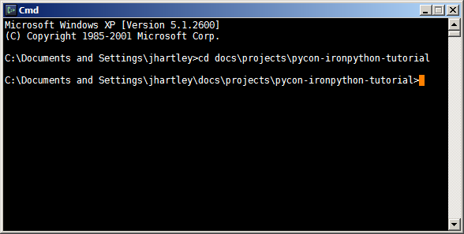
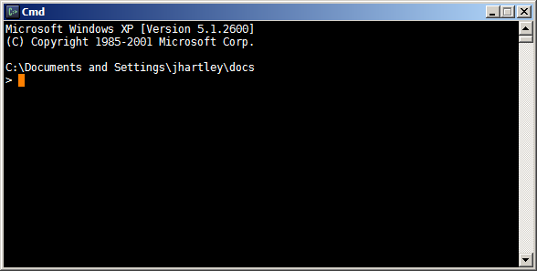

Set your Prompt
It's a tiny detail, but the default command-line prompt (on both Windows and Unix) drives me nuts.

See how my cursor is way over on the right. So every command you ever type gets immediately split over two lines.
This is governed by the PROMPT environment variable. It's the Windows equivalent of the Unix PS1 variable. You can set this using the environment variable editing GUI on the System Properties dialog. (I'll describe a better way to manage environment variables in a later post.)
set Prompt=$P$_$G$S
The dollar codes are expanded into:
- \$P - present working directory
- \$_ - newline
- \$G - greater than
- \$S - space

There, isn't that better? There are a bunch of other special dollar codes, that are described here. They only work within this one environment variable, you can't use them anywhere else.
Comments
Comments powered by Disqus